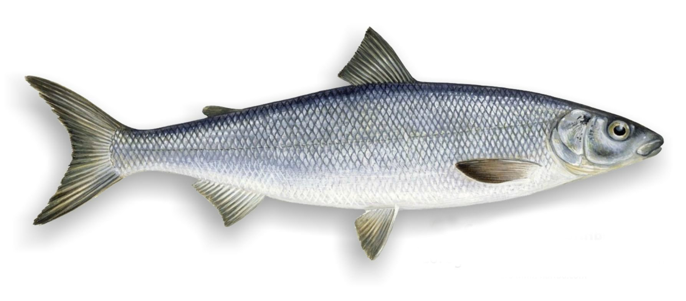

Жерех — хищная пресноводная рыба из семейства карповых. Научное латинское название Aspius aspius, старинные русские названия жереха: шереспер, конь, хват, белесть. Жерех обитает в реках Европы и Европейской части России. Характерный признак жереха — наличие на нижней челюсти, выдающегося вверх, выступа, а на верхней челюсти соответствующей ему выемки, это приспособление позволяет жереху удерживать его добычу: уклеек, пескарей. Жерех является популярной рыбой среди рыболовов, особенно ловящих на спиннинг, но его также можно ловить на удочку и нахлыстом. Мясо жереха обладает высокими вкусовыми качествами, хотя и довольно костляво. Жереха можно вялить, солить, коптить, жарить, запекать. Из жереха получается прекрасный балык, который по вкусу не уступает лососевому. Расскажем об этой интересной рыбе подробнее.
Внешний вид

Жерех имеет мощное, удлиненное, сжатое с боков туловище, покрытое мелкой мерцающей серебристо-белой чешуей. Спина жереха темная, синевато-серого цвета, бока серебристо-сероватые, брюхо белое.
Голова жереха большая, удлиненной формы, рыло заостренное, большой верхний рот, на челюстях и в полости рта зубов нет. Нижняя челюсть жереха выдается вперед.
На нижней челюсти жереха имеется выдающийся вверх выступ, а на верхней челюсти соответствующая этому выступу по форме выемка. Когда жерех закрывает свой рот, выступ четко попадает в выемку и челюсти плотно прилегают друг к другу. Такое особое приспособление возникло у жереха в процессе эволюции, для того чтобы удерживать челюстями без зубов схваченную добычу, которая трепещется и пытается освободиться. Особая форма челюстей является главным признаком, позволяющим рыболовам, отличать жереха от других видов рыб.
У жереха очень широкие жаберные щели. Радужная оболочка глаз жереха серебристая или желтая.
Зрение и другие органы чувств у жереха очень хорошо развиты. Даже увлекшись охотой за рыбой жерех полностью контролирует пространство вокруг себя и стоит появиться хоть малейшей опасности мгновенно исчезает из виду.
Спинной плавник жереха тонкий, длинный, острый, начинается позади начала брюшных плавников, спинной плавник серого цвета с темным кончиком. У жереха очень крепкий и мощный хвост, нижняя часть хвоста несколько длиннее верхней. Хвостовой плавник серый с темной оторочкой. Остальные плавники жереха окрашены в красный, либо оранжевый цвет у основания и в серый ближе к концу. Серое плавники, окантованные темной каймой, очень красиво сочетается с серебристо-белым одеянием рыбы. Элегантность жереха подчеркивают нижние плавники, отливающие красновато-оранжевым оттенком.
Размеры
Скорость роста жереха и достигаемые им размеры зависят от обилия кормовой базы и среднемесячной температуры воды в водоеме, где он обитает. Проходные жерехи, выходящие для нагула в море, достигают более крупных размеров, чем жерехи речных жилых популяций, постоянно живущие в реке. Жерехи живущие в южных водоемах растут быстрее и достигают более крупных размеров, чем жерехи живущие в более северных условиях.
К концу первого года жизни жерех весит около 50 грамм. К трем годам жерех достигает веса 500 грамм, к шести годам он достигает веса в 2 кг, а к 10-12 годам он достигает веса в 5 кг.
Обычно в уловах рыболовов встречаются жерехи длиной в 50-60 см и весом 2-2,5 кг. Реже в уловах встречаются более крупные жерехи длиной в 75-80 см, достигающие веса в 4-6 кг.
Предельный возраст жереха 9-10 лет у северных популяций и 5-6 лет у южных. Имеются сведения о том, что жерех может жить до 15 лет, достигая при этом длины в 120 см и веса в 12 кг, но такие рыбы встречаются исключительно редко.
Близкородственные виды и подвиды жереха
Обыкновенный жерех относится к роду Жерехи, семейству Карповые, отряду Карпообразные. В род жерехи входят два вида:
- Жерех обыкновенный или европейский, латинское название вида Aspius Aspius, обитает на территории Европы и Европейской части России.
- Жерех переднеазиатский, латинское название Aspius vorax. Переднеазиатский жерех обитает в бассейне рек Тигр и Евфрат, на территории Ирана, Ирака, Сирии и Турции. Вес переднеазиатского жереха составляет 1,5-1,6 кг, при длине тела 50-55 см.
Обыкновенный или европейский жерех имеет три подвида:
- Обыкновенный жерех — основной подвид жереха, обитает на территории Европы и Европейской части России.
- Красногубый жерех — обитает в реках Среднего и Южного Каспия.
- Аральский жерех — обитает в Аральском море и в реках впадающих в него: Амударье, Сырдарье, Сарысу и Чу. Аральский жерех живет до 9 лет, достигая длины до 70 см и веса в 6 кг.